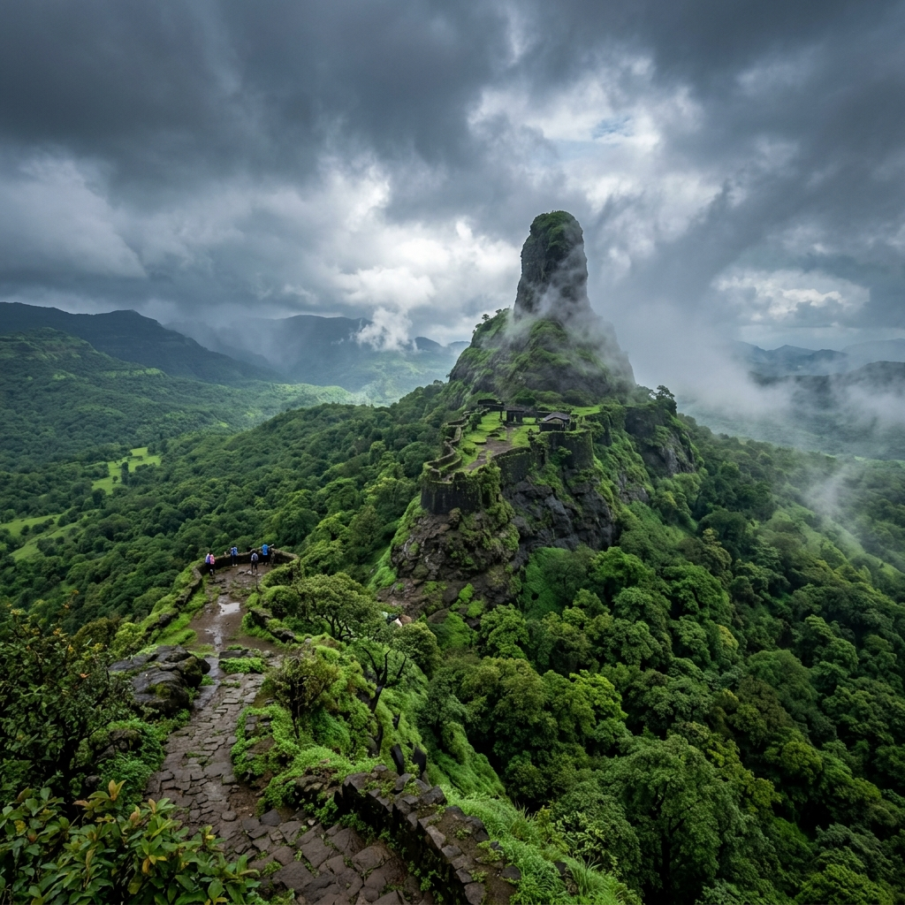
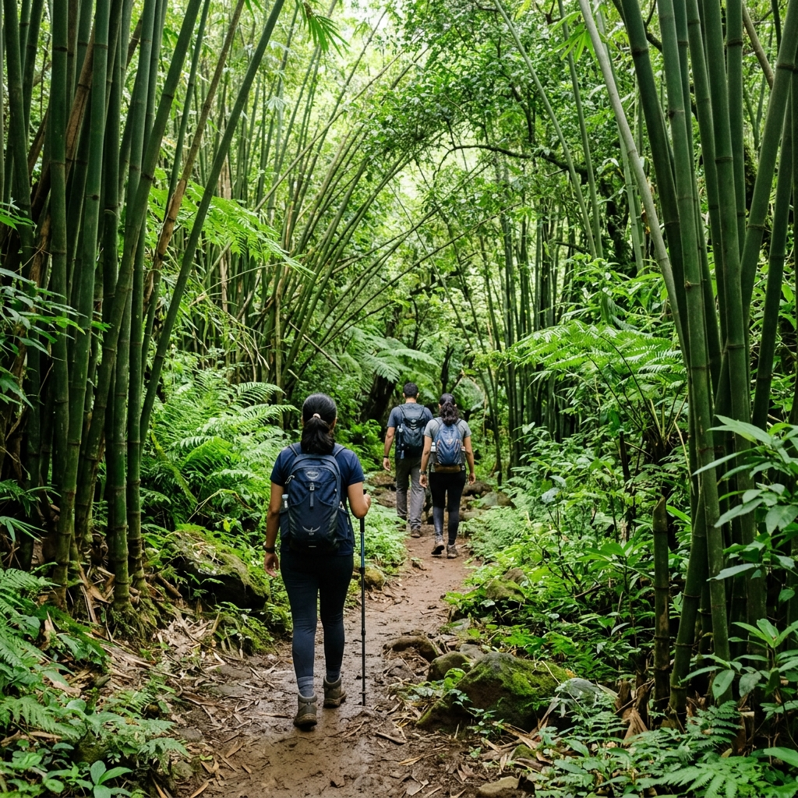

About Fort
Manikgad Fort is a lesser-known hill fort located near Panvel and Rasayani in Maharashtra. It is an offbeat trekking destination featuring forest trails, rocky patches, and scenic viewpoints.
The fort offers beautiful views of Karnala Fort and the surrounding Sahyadri ranges, making it ideal for nature lovers and trekkers seeking a peaceful experience. Built by the Maratha empire to monitor the surrounding trade route, it houses ruins of gates and water reservoirs.
Trek Profile
Offbeat / Peaceful
Access
Wavarle Village

Major Attractions
Explore the highlights of Manikgad's historic ruins.




Travel Guide
Comprehensive routes to reach the fort from Mumbai.
Option 1: Rail & Local Transit
Take a Mumbai Harbor Line local train to Panvel Station. From Panvel, board state transport (ST) buses or hire local auto-rickshaws directly to Wavarle village base area (~15 km).
Cost: ₹100 – ₹250 ApproxOption 2: Direct Drive
A scenic ~60 km drive from Mumbai via the Old Mumbai-Pune Highway and Panvel-Rasayani Road. Base villages include Wavarle and Vashivali, where parking is available.
Essential Information
Everything you need to know for a smooth adventure.
Stay & Food
No accommodations exist on the fort. Simple homestays and budget hotels are available in Panvel city. Carry your own food pack for the trek.
Essentials
Carry 3 liters water, trekking shoes with good grip, a cap, sunscreen, a raincoat (monsoon), a flashlight/torch, and a basic personal first aid kit.
Best Time
October to February is the best season for dry trails and pleasant weather. Monsoon treks are also scenic but the trails can get slippery and muddy.
Location & Coordinates
Manikgad Fort, Near Panvel, Raigad District, Maharashtra, India